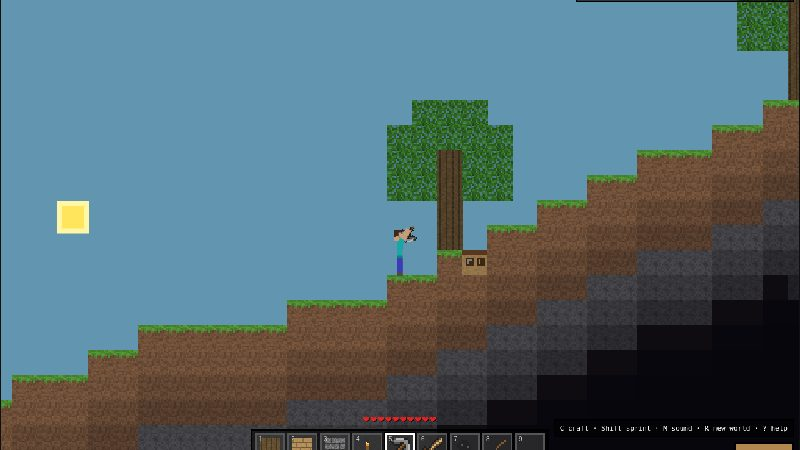
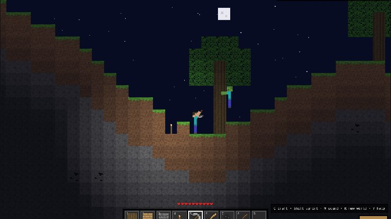

Mine
Dig for coal, iron, gold, and diamonds.
One block at a time.
Play NowDig for coal, iron, gold, and diamonds.
Place anything you mine, block by block.
Every world is new: hills, caves, beaches.
No download, no account. Saves in your browser.


Covers every hill. Mining it gives you dirt.
Mine by hand
A few blocks thick under the grass. Great for quick shelters.
Mine by hand
Punch a tree to start. Every run begins here.
Mine by hand
Everything below the dirt. Breaks into cobblestone.
Needs a wooden pickaxe
The most common ore. Coal makes torches and glass.
Needs a wooden pickaxe
Starts about 10 blocks down. Drops iron ingots.
Needs a stone pickaxe
Only shows up more than 28 blocks down.
Needs an iron pickaxe
The rarest ore. Comes in veins of 2 to 4, more than 34 blocks deep.
Needs an iron pickaxe
How deep to dig for each ore, counted in blocks below the surface where you are standing.
Press C in the game, or tap Craft on a phone, to open crafting. Here is the path from your first log to a diamond sword. Apples drop from leaves sometimes.
Your first craft, straight from a log.
Handles for every tool and torch.
Place it down. Tools need one nearby.
Unlocks stone and coal.
Crafting table nearby
Unlocks iron ore.
Crafting table nearby
Caves get dark. Light them up.
Unlocks gold and diamond.
Crafting table nearby
The final goal. Zombies beware.
Crafting table nearby
Heals you to full. Eat one before you dig for diamonds.
A and D or the arrows to walk, Shift to sprint, and W, Space, or Up to jump.
Hold left click. Stone needs a pickaxe, iron a stone one, diamond an iron one.
Pick a block with 1 to 9 or the mouse wheel, then right click to place it.
Press C to craft. Planks, sticks, and a table first, then pickaxes, swords, and torches.
Zombies come out at night. Fight back, hide with torches, and right click an apple to heal.
Your world saves on its own. M mutes sound, R starts a new world, ? shows help.
On a phone: use the ◀ ▲ ▶ buttons on the left to move and jump. On the right, tap ⛏ to switch between mining and placing, tap » to toggle sprint (it turns green when it's on), and tap Craft to open crafting. Tap any hotbar slot to pick it, and in place mode, tapping with an apple eats it.
Free, no download, no account. Your world saves in this browser.
On a phone? Touch buttons show up in the game.
Yes. It's free, runs in your browser, and needs no download or account.
Any modern browser on a computer. Phones get on-screen buttons, but a keyboard and mouse work best.
No. Blockcraft is a fan-made 2D sandbox inspired by Minecraft and isn't affiliated with Mojang or Microsoft.
In your browser on this device. Clearing your browser data or switching browsers starts a new world.
Not yet. Right now Blockcraft is single player.